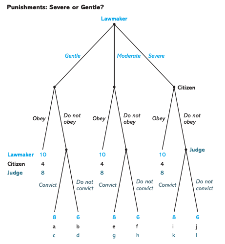
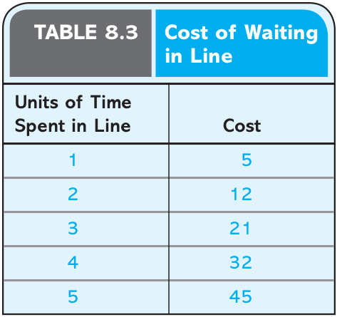
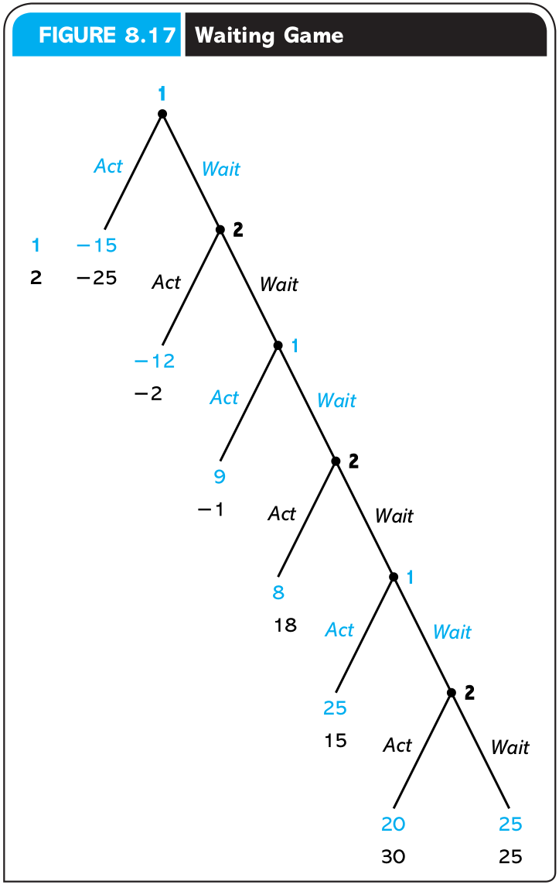
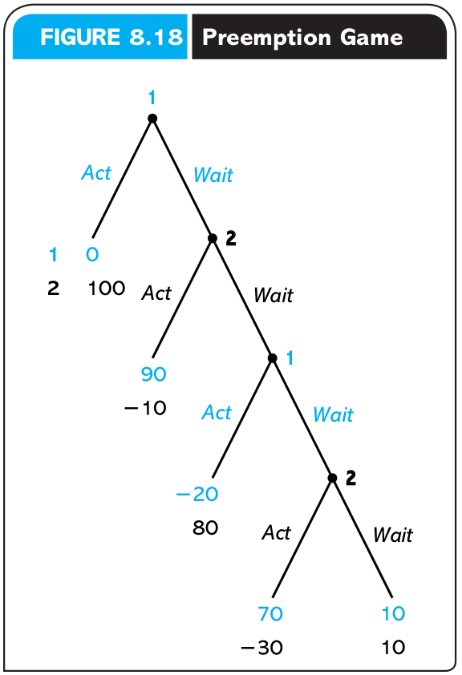
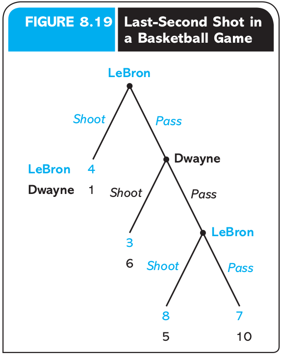
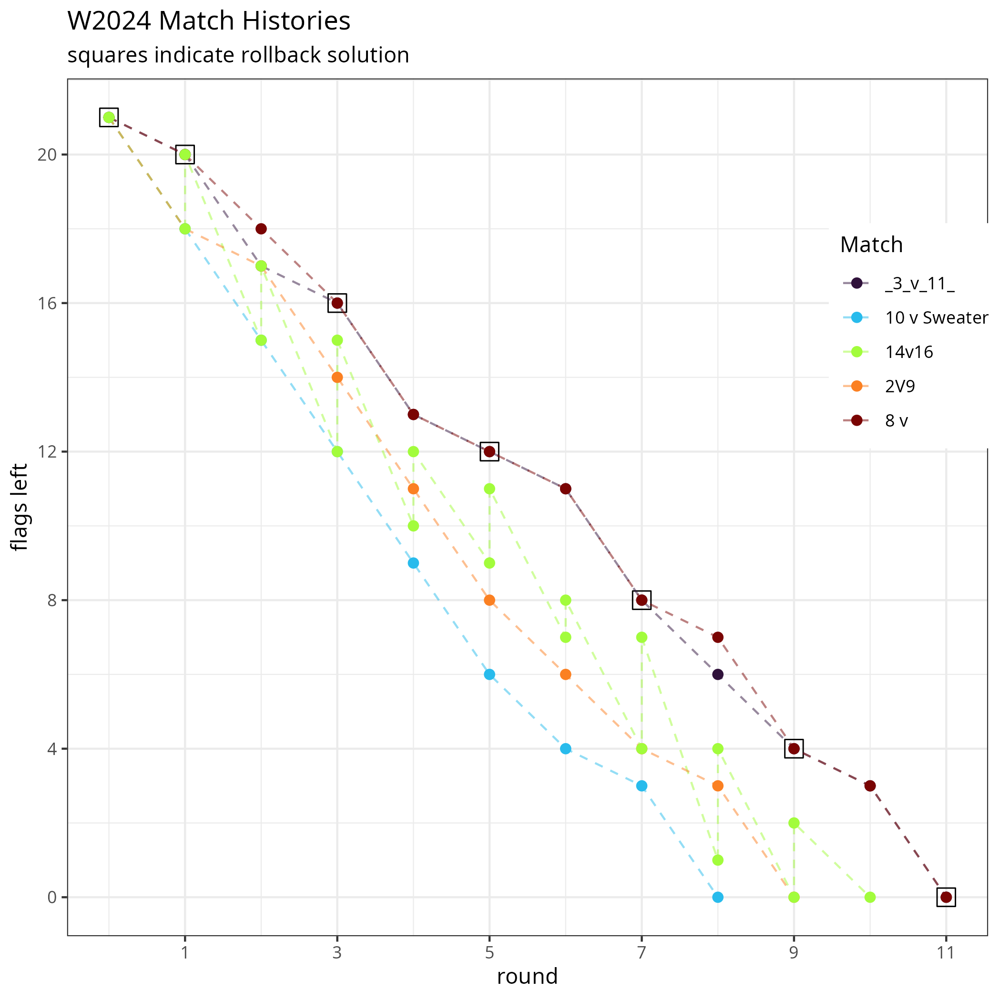
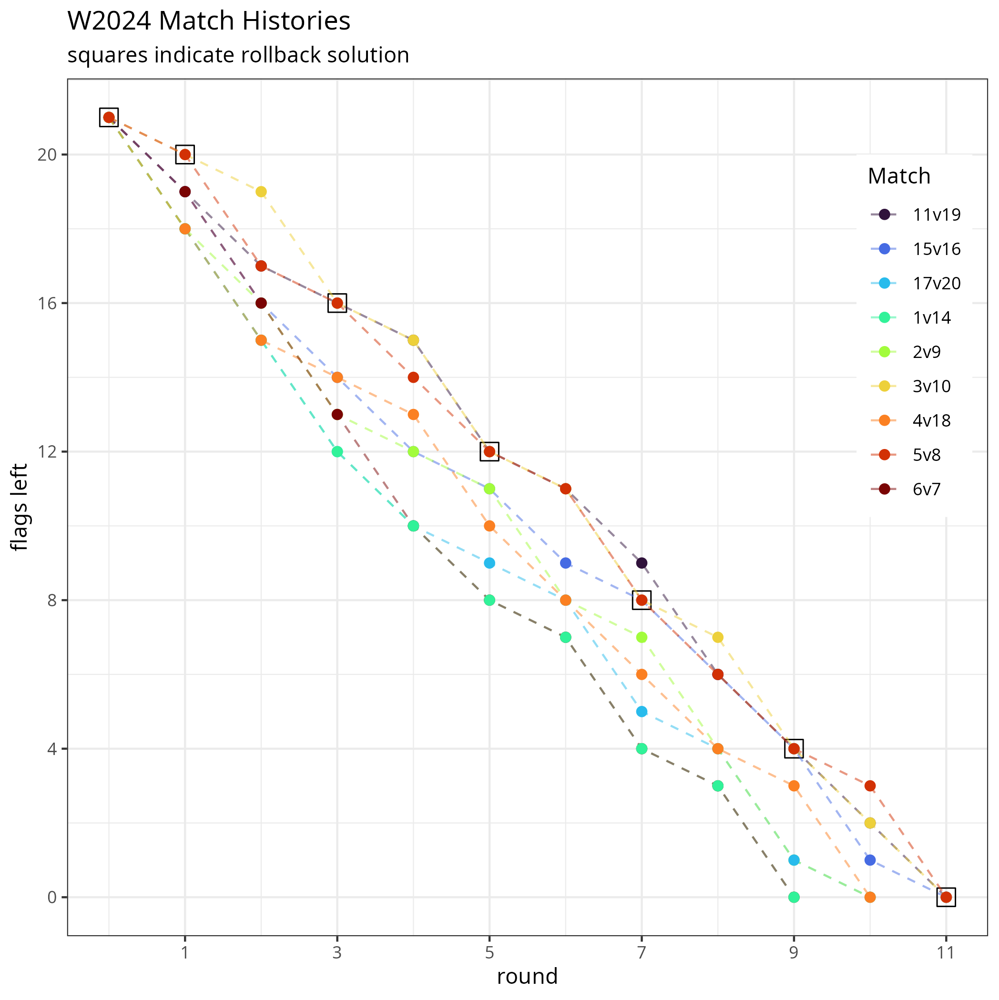
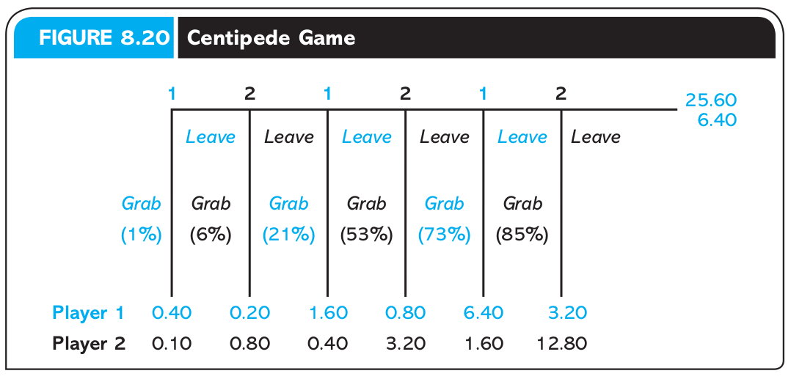
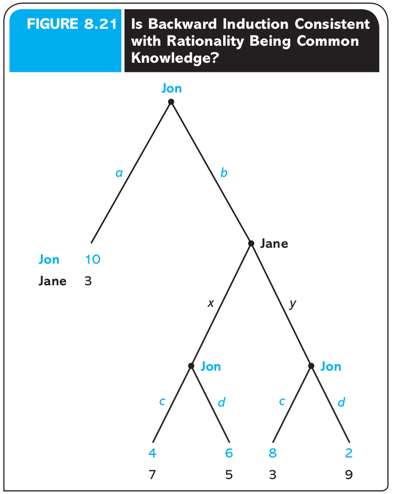

Introduction to Game Theory
Sequential Games
2025
Outline
Game trees
Backwards Induction
Efficiency
Extensive Form
Game Trees/Extensive Form as a tool
Before we learn how to solve a game, it will helpful to be able to visualize them
Because of the ordered nature of sequential games, a tree diagram makes sense
A Decision Tree

Extensive Form Definition
A Tree Graph consists of:
Multiple nodes with an ordered hierarchy starting from one initial node
Branches coming from each node which connect it to later nodes
The tree ends in any of the multiple terminal nodes
Warning
Each (non-initial) terminal node may have multiple branches leading from it; but must only have one branch that leads to it.
Anatomy of a tree

Anatomy of a tree

Anatomy of a tree

Kidnapping Game 1
A kidnapper named Guy has contacted the victim’s wife, named Vivica, to demand a ransom.
To predict what will happen to the victim, Orlando, we need to create a game theoretic model of the situation.
Let’s use the language of the tree graph to visualize this game.
Kidnapping Game

Who are the players?
Where are the decisions?
What are the branches? What do they represent?
What do the terminal nodes represent?
Is this a complete representation of a game? What’s missing?
Kidnapping Game payoffs
| Outcome | Guy |
|---|---|
| No kidnapping | 3 |
| Kidnapping, ransom paid, Orlando killed | 4 |
| Kidnapping, ransom paid, Orlando released | 5 |
| Kidnapping, no ransom paid, Orlando killed | 2 |
| Kidnapping, no ransom paid, Orlando released | 1 |
Kidnapping Game payoffs
| Outcome | Guy | Vivica |
|---|---|---|
| No kidnapping | 3 | 5 |
| Kidnapping, ransom paid, Orlando killed | 4 | 1 |
| Kidnapping, ransom paid, Orlando released | 5 | 3 |
| Kidnapping, no ransom paid, Orlando killed | 2 | 2 |
| Kidnapping, no ransom paid, Orlando released | 1 | 4 |
Kidnapping game tree with payoffs

Predictions?
Based on the extensive form game tree with payoffs,
- Do you have any predictions for what strategies each player will choose?
a Definition of an Extensive Form Game: 1
A collection of decision-makers, called players or agents
A set of decision nodes, each represents the information available to the player of that node
Strategies for each player which list the branches from each node that represetn the actions a player would take if faced with that choice
A tree diagram which maps the intersections of players’ strategy profiles to the outcomes represented at each terminal nodes
Strategies in Extensive Form Games
Definition
A strategy is a complete plan of action which assigns an action at every node where a player makes a decision
Warning
Be careful to distinguish between a strategy and a single action/choice
What’s the difference?
Apply this definition to the kidnapping game:

- How many decisions does Guy make?
- 3
- How many decisions does Vivica make?
- 1
Apply this definition to the kidnapping game:

- Write out a complete strategy for Vivica
- Only two strategies:
- Pay the ransom,
- or Don’t pay
- Only two strategies:
Apply this definition to the kidnapping game:

- Write out at complete strategy for Guy
- Let’s give some shorter names for Guy’s actions:
- \(A\) \(\equiv\) Kidnap Orlando (Abduct)
- \(I\) \(\equiv\) Don’t kidnap Orlando (Ignore)
- \(K\) \(\equiv\) Kill Orlando
- \(L\) \(\equiv\) Let Orlando live
- Let’s give some shorter names for Guy’s actions:
Apply this definition to the kidnapping game:
Guy has \(8\) total complete strategies:
| If Guy \(A\)bducts | If Guy \(I\)gnores |
|---|---|
| ( \(A\), \(K\), \(K\) ) | ( \(I\), \(K\), \(K\) ) |
| ( \(A\), \(L\), \(K\) ) | ( \(I\), \(L\), \(L\) ) |
| ( \(A\), \(K\), \(L\) ) | ( \(I\), \(K\), \(L\) ) |
| ( \(A\), \(L\), \(L\) ) | ( \(I\), \(L\), \(L\) ) |
Backwards Induction
Solving Sequential Games
Now that we have defined all the parts of what a sequential game is we can start to solve them.
- A solution in our case will be a prediction of what rational agents would do in a sequential game
The smoking decision
Do I want to try smoking today?
Suppose today I can either Try smoking for the first time, or Not try
If I choose Try today, then I will have another choice in the future:
Continue smoking, or Quit
The smoking decision
Let’s create some preferences over the three different outcomes:
\(U(\text{Not}) = 0\) - I’m no worse off, but don’t get to experience what it’s like
\(U(\text{Try}\rightarrow\textbf{Quit}) = 1\) - I get the experience of smoking without long-term health consequences, etc.
\(U(\text{Try}\rightarrow\textbf{Continue}) = -1\) - I become an addict
The smoking decision
Let’s model this as a decision tree 
The smoking decision
What would a rational version of myself choose?
Is this realistic?
Why might Trying and then Quitting be a bad idea?
The smoking game
We can apply the tools of game theory to this decision:
Let’s add future Dante as another player who acts at the second decision node
Future Dante is different from Present Dante because he has different preferences:
\(U_{FD}(\text{Continue}) = 1\) because he’s already addicted
\(U_{FD}(\text{Quit}) = -1\) because withdrawl is painful
The smoking game

The smoking game
What will Future Carmen choose?
Should Carmen choose to Try smoking if she knows what her future self would choose?
‘Pruning’ branches
If Carmen is forward looking, knows her future self’s preferences, and knows that her future self is rational,
Then she can eliminate the possibility that her future self would quit.
- Pruning is this type of logic applied to eliminating certain branches in a game tree.
‘Pruning’ branches
If Future Carmen will never choose to Quit smoking once she is already an addict,
what choices is Today’s Carmen left with?
Try knowing that she will continue in the future and get -1 payoff
or Not try smoking today and earn 0 payoff
Backwards Induction (intuitively)
Let’s outline the logical steps we used to solve this game:
We were uncertain about what would happen in this game, because Today’s Carmen’s optimal strategy depended on what Future Carmen woud do
But Future Carmen is the last player in this game, so her choice only depends on her own preferences
Knowing what Future Carmen would choose allowed us to find Today’s Carmen’s best strategy
Smoking Game Solution

figures/fig3.5.png
Backwards Induction defined
The method of looking at decisions in the future to decide what to do now is called Backwards Induction or Rollback
Definition 1
… using rollback requires starting to think about what will happen at all the terminal nodes and literally “rolling back” through the tree to the initial node…
Backwards Induction defined
The method of looking at decisions in the future to decide what to do now is called Backwards Induction or Rollback
Definition 1
When all players do rollback analysis to choose their optimal strategies, we call this set of strategies the rollback equilibrium2 of the game; the outcome that arises from playing these strategies is the rollback equilibrium outcome
Solving the Kidnapping Game
Kidnapping Game Solution
The Rollback Equilibrium is:
- { (Kidnap, Release, Kill), (Pay) }
You should read this as:
Guy Kidnaps and will Release if Vivica Pays, but will Kill if Vivica Doesn’t Pay
Vivica Pays the ransom
Adding more players
3-player planting game
Emily, Nina, and Talia are roommates who want to get a start on their communal garden.
They like to enjoy the benefits of fresh produce and green space, but it is costly for them to put the work in.
2 or 3 people working is enough to keep the garden healthy, but if 1 or 0 work, then the garden will die.
Planting Game payoffs
| outcome: | utlity: |
|---|---|
| I don’t contribute, but garden lives | 4 |
| I contribute, and get garden. | 3 |
| I don’t contribute, and garden dies | 2 |
| I contribute, but garden dies | 1 |
Planting Game Tree

Rollback in the Planting Game
Who should we start with to solve this game?
- Talia, because she is the last one to move, her choices don’t depend on other players
Rollback in the Planting Game
How many strategies does Talia have?
16 total complete strategies
CCCC, CCCD, CCDC, CCDD, CDCC, CDCD, CDDC, CDDD, DCCC, DCCD, DCDC, DCDD, DDCC, DDCD, DDDC, DDDD
Rollback in the Planting Game
Which of Talia’s strategies can be eliminated as irrational?
- Any which include an action which would lead to a lower payoff than another possible action at the same node
Rollback in the Planting Game
Let’s simplify the game by pruning Talia’s eliminated branches
Rollback in the Planting Game

Equilibrium Path of Play
Note that there is one continuous path we traced from the initial node to a final equilibrium outcome.
However, we couldn’t have gotten their without the other arrows paths even though they are never reached in equilibrium.
Recall that a strategy is a collection of choices at every decision node.
Equilibrium Strategies
Even though the players available actions are all called the same (Contribute or Don’t), this tree provides labels of each decision node so we can say something like:
“Nina’s strategy in the rollback equilibrium is { Don’t Contribute at b, Contribute at c }”.
- To make it even shorter, let’s call this strategy DC.
Rollback Equilibrium Strategies
The equilibrium is:
- { D1, DC2, DCCD3 }
Three new concepts
A list of available strategies for each player 1
An optimal strategy for each player
- A complete plan of action states a player’s best choice at each node where she could make a decision 2
The path of play in rollback equilibrium which combines optimal strategies for all players
Welfare and Efficiency
What are the good outcomes in the planting game?
Can we rank outcomes by collective welfare?
Pareto Dominance
Pareto optimality (or efficiency) is econonomists’ best shot at coming up with a ranking of which outcomes are objectively ‘better’
For any two outcomes (🎉, 🎊), 🎉 is Pareto dominated by 🎊 if both:
No one strictly prefers 🎉 to 🎊 - U👤(🎊) \(\geq\) U👤(🎉) \(\forall 👤 \in \{ 🙍, 🧑, 💆, 🧖, 🧑, 😺, ...\}\)
At least one person strictly🎉 prefers 🎉 to 🎊 - \(\exists 👤\) such that U👤(🎊) \(>\) U👤(🎉)
Pareto Improvement
The move from a policy y to an alternative policy x is a Pareto improvement if x Pareto dominates y.
Such a policy change should reasonably be seen as unambiguously good
Another perspective is that no-one would veto a pareto improvement
Pareto Efficiency
An outcome is Pareto Efficient (Optimal) if no other outcome Pareto dominates it.
An outcome is Pareto Infficient if at least one other outcome Pareto dominates it.
Ranking the Planting Payoffs
Compare (4,3,3) to (1,2,2)
- Which one is Pareto dominating?
Ranking the Planting Payoffs
Now compare (4,3,3) to (3,4,3) or (3,3,4)
- Which one is Pareto dominating?
Is the rollback equilibrium outcome a Pareto efficient one?
Discussion: Efficiency vs other social comparisons
How useful is Pareto Efficiency in the real world?
How else could we group outcomes?
We might address this later in the class with what is known as Cooperative Game Theory
Order Advantages
Order Advantages
Who came out ahead in the Planting Game?
- Why?
First-mover advantage
Emily received her best outcome of 4 because she can take advantage of acting first.
When a game favors those who act first, we say there is a first-mover advantage
But it’s not always helpful to act first!
Second-mover advantage
Sometimes you want to see the actions of others before you know your best response
When a game favors those who decide after another player, there is a second-mover advantage
For example, Squid Game bridge game
Adding More Moves
Even a simple game get complicated fast]

2x2 Tic-Tac-Toe
This is just for a simpler game with a 2x2 grid.
Even though it looks complicated, the main branches are really just copies of each other
What is the rollback equilibrium?
3x3 Tic-Tac-Toe

3x3 Tic-Tac-Toe
- Most people probably figure out the rollback equilibrium after playing it enough
The second player can always get at least a tie:
If first player chooses middle, then take a corner
If first player chose anything else, take the middle
After the first stages, block any attempt by player 1 to get 3 in a row
More complicated games
Do all games have theoretical solutions?
Checkers?
Chess?
Go?
Chess
Technically rollback solvable, but with \(10^{120}\) possible moves, it hasn’t been solved by either human or machine
Human experts and computer programs instead rely on experience of past game possibilities
and on some partial rollback, or an intermediate valuation function, where you look at all possibilities in the next few moves and assign probabilistic payoffs
Theory in complicated situations
Is rollback still useful for complicated games where the theoretical solutions are infeasible to solve?
Yes!
Understanding simpler games can help you develop intuition for solving more complicated ones
Complicated games can be decomposed into smaller parts where solving is easier
Examples
Lawmakers’ Game 1
Two distinct proposals, A and B, are being debated in Washington. Congress likes proposal A, and the president likes proposal B.
| Outcome | Congress | President |
|---|---|---|
| A becomes law | 4 | 1 |
| B becomes law | 1 | 4 |
| Both A and B become law | 3 | 3 |
| Neither (status quo prevails) | 2 | 2 |
Lawmakers’ Game 1
The moves in the game are as follows. First, Congress decides whether to pass a bill and whether the bill is to contain A or B or both. Then the president decides whether to sign or veto the bill. Congress does not have enough votes to override a veto. Draw a tree for this game and find the rollback equilibrium.
Lawmakers’ Game 1
Now suppose the rules of the game are changed in only one respect: the president is given the extra power of a line-item veto. Thus, if Congress passes a bill containing both A and B, the president may choose not only to sign or veto the bill as a whole, but also to veto just one of the two items. Show the new tree and find the rollback equilibrium.
Optimal Punishment Game 1

“Laws too gentle are seldom obeyed; too severe, seldom executed”
- Benjamin Franklin
Optimal Punishment Game 1
What values of a-l make the lawmaker choose a Moderate penalty?
Preemption
You’re at the airport waiting to board your flight to go on vacation to Croatia with your carry-on backpack stuffed with everything you’ll need so you don’t have to pay for a checked bag. You look around and notice it seems like a lot of other people have had the same idea.
A voice comes on the intercom with a familiar announcement:
Due to this being a full flight, we will be asking passengers to check their bags at the gate
Even though boarding hasn’t officially started yet, everyone is starting to stand around the ticket counter.
Preemption
A preemption game is one in which:
players’ payoff increase when they act before others
but their payoffs are also higher when they act later in time
- You’ve probably noticed yourself playing a few different preemption games in different settings, even if you didn’t have a name for it
Preemption

Here’s a table to represent the time costs of waiting in that boarding line
Also assume that the benefit to being the first to board is \(30\) and being second is \(20\)
Preemption

Here are the net payoffs (benefits - costs) applied to an extensive form representation of the simplified two-player boarding game
Let’s find the rollback equilibrium
Preemption
Is the equilibrium outcome of this game a Pareto efficient one?
Why or why not?
Preemption
A general lesson of all preemption games is that players act too soon from a social efficiency perspective.
- Everyone would be better off in the outcome where we all wait, but because there is an incentive to try to jump the line, rational agents cannot be expected to wait instead of getting ahead
War of Attrition
Not all games that involve waiting are preemption games, though.
A war of attrition is a type of game where:
Players’ payoffs are higher when they act after other players
and higher the sooner in time they act
War of Attrition

- What is the rollback equilibrium of this game?
War of Attrition
A general lesson of all premption games is that players wait too long than what would be socially efficient if they collectively acted sooner.
War of Attrition
What if the players flipped a coin to decide who would act and then that player would immediately act?
What would be their expected payoffs
The problem is that such an agreement is not enforcable
- Once the coin flip has been observed, there’s nothing to stop the player who would be directed to act first to ignore the flip and wait.
Why don’t NBA stars pass more?

What is the rollback equilibrium?
This is a variation of a game called Centipede which comes up a lot in lab experiments
We’ll use come back to the centipede game in our discussion of how well our theoretical predictions actually match peoples’ behavior
Evidence concerning Rollback
Does rollback hold up in the real world?
One of the goals of game theory is to generate testable predictions
You have all participated in a few such tests of the theory in this class
Survivor Flags game results
Survivor Flags game results
The last time I taught this class:
Why didn’t all teams find the rollback equilibrium?
Did everyone have perfect information about the rules?
Were people thinking ahead?
Were there disagreements within any teams as to the optimal strategy?
Why didn’t all teams find the rollback equilibrium?
What about common knowledge of rationality?
If you were on the second team to choose, and you see the first team doesn’t take one flag, what should you think?
Should you still stick to the optimal strategy?
Survivor Flag Results Discussion
This game was relatively simple because it only relied on one team to come up with the optimal strategy
As long as the first team always took the right number of flags, the second team didn’t have any impact on the game
This is also a zero-sum game, so there were no opportunities for teams to benefit by cooperating
Let’s look at a similar game, but with non-zero-sum payoffs
Centipede Game
Two participants play this game, taking turns over several rounds.
The first is offered a choice between:
- splitting 50 cents where they keep 40 and the other player gets 10
or b) they pass the choice to the next player who gets the same choice but the pot they can choose to split from doubles
Centipede Game
First, what is the theoretical solution?
Centipede Game
Now what would you do if you were in this situation?
When would you grab?
Centipede Game
Out of 100 pairs of your peers, how many times do you think that player 1 would grab in the first node?
- In a lab experiment, only 2 times out of 281 did the first player take the first 40 cents (~1%)
How many times do you think player 2 grabed in the second node?
- Only 18 out of 279 (~6%) did
How many pairs do you think got to the end of the tree without anyone grabbing? So the last player giving up $12.80 for only $6.40
- 15%!
Centipede Game Evidence Discussion
What explains the drastic departure in lab experiments from the preditiction of backwards induction?
Are players’ not looking ahead to the end of the game?
- Maybe? But in that experiment, the percentage of players grabbing increased over later stages. In the 5th node, 73% of player 1’s grabbed.
Are college students driven by more than money?
Probably. What are some other things which could factor into these participants’ payoffs?
What about how much they care about how much their opponent gets?
Ultimatum Game
Player A and Player B are offered a dollar to divide amongst them.
Player A gets to propose how to split the dollar (i.e., 50:50, 75 to me 25 to you, etc)
Player B can either accept the proposed split, or reject so that both players get nothing
What is the rollback solution if both players payoffs are only determined by how much money they earn?
Ultimatum Game Evidence
In spite of the theoretical prediction, the most common proposal in lab experiments is 50:50.
Most player B’s actually reject any offer of 25% or less.
This seems to indicate that most people have some sort of aversion to inequity
If you’re interested in learning more, behavioral economics develops on the basic rational agent model to make sense of some of these experimental findings
A logical paradox with Backward induction

What should Jane do if Jon chose \(b\)?
If she knows Jon is rational, then he would choose \(d\) if she chose \(x\), and \(c\) if she chose \(y\)
So Jane should choose \(x\) to get a payoff of \(5\) over \(3\) if she chose \(y\)
A logical paradox with Backward induction
But if Jon chose \(b\), doesn’t that mean that he can’t be rational?
What should Jane do?
Maybe Jon just made a mistake, and Jane should stick to her assumption that he will continue to try to make rational choices

EC327 | Lecture 2 | Sequential Games